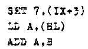
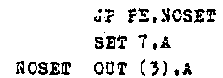
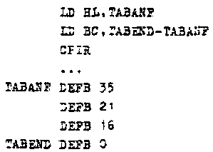
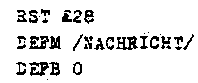

Nascom Journal |
1/80 |
Ein Assembler ist das wichtigste Hilfsmittel für den Programmierer, der Programme in Maschinensprache schreiben will. Mit einem Assembler wird ein Mikrocomputer wie der Nascom zu einem Entwicklungssytem. Deshalb sollen im Nascom-Journal zwei Artikel erscheinen, die sich mit Assemblern befassen. Im ersten Teil wird erklärt, was ein Assembler kann und wie man mit ihm umgeht. Außerdem soll gezeigt werden, welche Eigenschaften ein Assembler haben soll. Im zweiten Teil werden dann die für den Nascom lieferbaren Assembler verglichen und getestet.
Zum Betrieb eines Assemblers sind mindestens ein Nascom-Grundsystem und eine Speichererweiterungskarte nötig. Da derzeit wohl nur wenige Nascom-Besitzer eine Floppy-Disc haben, zielt die Beschreibung auf „speicherresidente“ Assembler. Dabei sind gleichzeitig der Assembler, der Quelltext und der erzeugte Code im Speicher, ohne daß während des Betriebs auf externe Medien zugegriffen werden muß.
Assembler für den Nascom sind lieferbar in EPROMs, dann ist der Assembler nach dem Einschalten sofort verfügbar, oder auf Kassette, was zunächst ein Einlesen nötig macht (einen Assembler in EPROMs kann man natürlich auch nicht versehentlich zerstören).
Die Hauptaufgabe eines Assemblers ist es, ein Programm, das in Assemblersprache geschrieben ist, in ausführbaren Code zu übersetzen. Ein Assembler nimmt dem Programmierer also die „Dreckarbeit“ ab, den hexadezimalen Code für die Befehle in einer Tabelle nachzuschlagen. Gibt der Programmierer z.B. folgenden Code ein:
dann erzeugt der Assembler den zugehörigen Code
Ein Assembler übernimmt außerdem die Berechnung von Adressen. Gibt der Programmierer z.B. folgende Befehle ein:
dann berechnet der Assembler die Adresse der Zeile, in der die Marke „NOSET“ steht und setzt sie in den Code des Sprungbefehls ein. Dies funktioniert bei allen absoluten und relativen Sprüngen und bei Unterprogrammaufrufen. Besonders hilfreich ist das bei relativen Sprüngen, wo die umständliche Adressrechnerei entfällt, aber auch dann, wenn ein Programm nachträglich geändert werden soll. Muß z.B. zwischen dem Sprungbefehl und der angesprungenen Zeile ein weiterer Befehl eingefügt werden, so kann man das im Quelltext ohne sonstige Änderungen tun. Erstellt man ein Programm dagegen direkt im hexadezimalen Code, dann muß man viele, wenn nicht alle Adressen neu berechnen, nachdem man einen zusätzlichen Befehl eingefügt hat.
Ein Assembler kann in der Regel auch arithmetische Operationen zur Berechnung von Operanden ausführen:
Schließlich kann ein Assembler in der Regel auch Klartext in ASCII-Code übersetzen:
Der Assenbler dokumentiert seine Arbeit in der Assembler-Liste. Auf der nächsten Seite ist ein (nicht sehr sinnvolles) Programm aus den Beispielen zusammengesetzt (die Liste wurde von ASM/EPROM V1.1 auf einem Nascom-1 erzeugt und mit dem Programmpaket „TTY“ auf einem 5-Kanal-Fernschreiber ausgedruckt).
Die Assembler-Liste enthält die Programmadressen ➀ den erzeugten Code ➁ die Zeilennummern des Quelltexts ➂ und den Quelltext ➃ sowie eventuelle Kommentare ➄
| Seite 12 von 16 |
|---|